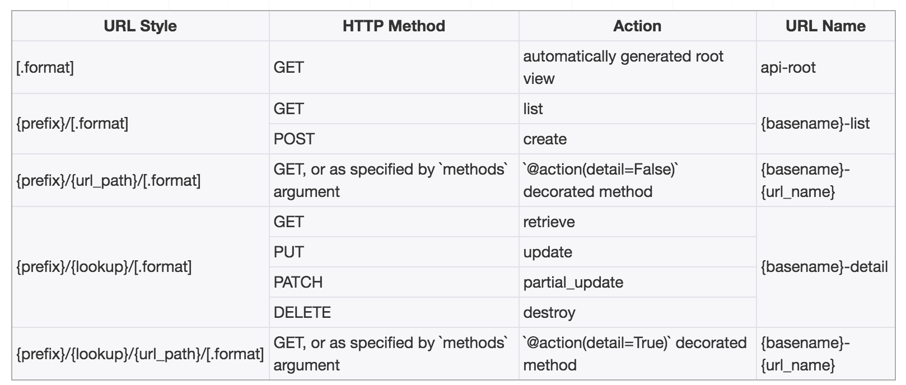

路由Routers
对于视图集ViewSet，我们除了可以自己手动指明请求方式与动作action之间的对应关系外，还可以使用Routers来帮助我们快速实现路由信息。
REST framework提供了两个router
- SimpleRouter
- DefaultRouter
1. 使用方法
1） 创建router对象，并注册视图集，例如
from rest_framework import routers
router = routers.SimpleRouter()
router.register(r'books', BookInfoViewSet, base_name='book')
register(prefix, viewset, base_name)
- prefix 该视图集的路由前缀
- viewset 视图集
- base_name 路由名称的前缀
如上述代码会形成的路由如下：
^books/$ name: book-list
^books/{pk}/$ name: book-detail
2）添加路由数据
可以有两种方式：
urlpatterns = [
...
]
urlpatterns += router.urls
或
urlpatterns = [
...
url(r'^', include(router.urls))
]
2. 视图集中包含附加action的
class BookInfoViewSet(mixins.ListModelMixin, mixins.RetrieveModelMixin, GenericViewSet):
queryset = BookInfo.objects.all()
serializer_class = BookInfoSerializer
@action(methods=['get'], detail=False)
def latest(self, request):
...
@action(methods=['put'], detail=True)
def read(self, request, pk):
...
此视图集会形成的路由：
^books/latest/$ name: book-latest
^books/{pk}/read/$ name: book-read
3. 路由router形成URL的方式
1） SimpleRouter

2）DefaultRouter

DefaultRouter与SimpleRouter的区别是，DefaultRouter会多附带一个默认的API根视图，返回一个包含所有列表视图的超链接响应数据。